My Playground
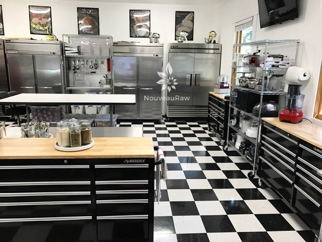
I am always getting requests to view my kitchen, so I felt it was time to share some photos and tell you a little bit in how it came to be. We have a licensed commercial kitchen attached to the house which is one big playground for me. This space use to be a double-car garage but over time, we have slowly converted it to my own personal slice of heaven.
When Bob and I were living part-time in Arizona and part-time in Alaska, we thought that we would create a commercial kitchen in Tucson. We hired an architect to help with the design and purchased some equipment from a business that was shutting their doors and thought that we were well on our way to setting up shop there. But we ended up moving to Oregon where we decided to live full-time. So we shipped everything up from Arizona in hopes that one day we would have a commercial kitchen here.
 Let’s start the story…
Let’s start the story…
Roughly three years ago, we started a raw food manufacturing company, Oldfather Farms. There was local interest in selling my raw desserts and I had one particular recipe (Crispy Monkey Brittle) that we wanted to manufacture and get into stores. But first, we needed to have a licensed kitchen to produce our products. So we did tons of research and got ourselves well prepared for this new chapter in our lives.
We outgrew our kitchen…
In Oregon you can get something called a licensed domestic kitchen. Which means if you meet certain restrictions you can use your home kitchen to manufacture foods for commercial sale. But as business picked up, the demand for more space became apparent as we continually bumped into one another, ran out of space to mix batters, and soon discovered that the sink was too small to properly sanitize all the dishes I created. Visions of how to expand without building or renting a space became a challenge. We spent a lot of time mulling over the pro’s and con’s of renting, we looked into vacant spaces with eager minds, but we came to the decision that we somehow had to make whatever space we had… work.
As you will see in the photos we have 2 large freezers and 2 large fridges. These were tucked away in the garage, but one day I figured out that they made for a wonderful mock “wall” when lined up. I confronted Bob with a tray of raw chocolates and a request to give up 1/4 of the garage for me to start a little kitchen space. With his blessings, I set out to conquer the garage, inch by inch.
And that… I did! Bob agreed to “lend” me 1/4 of garage. I lined up my freezers and fridges to create a barrier between the two spaces. There was a tiny little walkway between the freezers and the wall that Bob could use to get to his workspace. My new area was wonderful but it still felt a little crowded, so every night while Bob was getting ready for bed, I snuck out to the garage and moved my wall of freezers just an inch. Who misses an inch? Right? hehe
Before, he knew it, I had claimed 1/2 of the garage. It didn’t take him to long to notice that he couldn’t open the toolbox drawers all the way…. “Amie Sue!” …. “Yes love, may I offer you a slice raw Key-Lime pie?” I know how to soften the mood of any situation and I won once again. hehe
Soon we decided that I needed 3/4 of the garage, so together (no more being sneaky hehe) we moved the wall of freezers a few more feet. This left Bob with 1/4 of the garage. My, my how the cards had changed. He could open the garage doors and it looked like a front of a tool store. While it may have looked cool… it wasn’t all that functional. I was beginning to feel bad for taking over the garage but Bob was enjoying all the wonderful foods that I was creating… so much to the point that he freely offered up the whole garage to support my culinary journey. Is this man amazing or what? (Someday I will share the challenges of building a barn for his tools and projects.)
Creating the playground
We did a lot of work to get the “garage” ready to be licensed and turned into a commercial kitchen. To give the kitchen a good foundation, we had to start with the floor of course. We sealed the concrete and then laid down tile. I freshened up the walls and ceiling with new coat of white paint. We replaced two small windows that were high up on the wall with two large windows (got them discounted) which brought in tons of natural light and allows me to enjoy the gorgeous nature that surrounds us. Talk about inspiration!
With the kitchen stocked with sinks, rolling shelves, fridges, freezers, dehydrators, and everything else in between, it really started to take shape. The only thing that gave the space away as a former garage were the garage door railings. At first, we decided to keep them in place… just in case we ever wanted to convert it back to a garage. Ah yea not likely. hehe But after quite a while, we decided it was time for them to come down. And then before we knew it, with the help of a friend, the wall was soon framed in, sheet rocked, textured, and I had pulled out the paint roller one more time. And just like that, the garage doors disappeared from the room. From the outside, it looks like we have a two car garage but from inside, it now looks like one huge amazing kitchen!
Over time little things have changed in terms of organizing everything, but you have to really live in space to understand the flow. Last year I brought in some Husky tool boxes to create more storage and extra work surfaces. Around that same time, Bob and I had been discussing the idea of getting a farm dog. We had many conversations on what breed we wanted. Bob loved huskies but truthfully, I can’t handle the shedding.
Anyway, with that conversation muddling around in our heads, one day we were in the hardware store. That was when I spied the toolbox and knew that it would perfect for the kitchen. It was cheaper than purchasing any cabinets or building them, and it was on wheels which I need so I can thoroughly clean the floors. I found Bob in the plumbing aisle, pulled up along side him, looped my arm in his, and asked him to come with me. In a sweet playful voice I said, “Remember sweetie how much you said you really wanted a husky?” Bob nodded. “Well I decided that I do too!” Just then we rounded the corner and there she was… large, black and tan… obediently sitting there waiting for my return. “I found us one!!” Good thing he loves my sense of humor. :) We loaded her up and brought her home. Perfecto.
The next day, I went back to the hardware store and found three more on sale and was also able to get another discount on top of that for taking the floor models. So, I loaded the truck up and headed home. Once there, Bob came out to the truck as I lowered the gate… “Well babe, you can’t have just one husky… they get lonely, so I brought home a few more!” lol
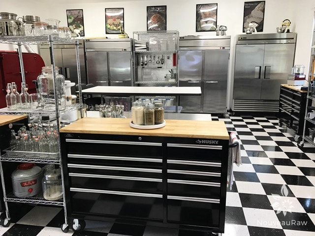
I use the toolbox drawers for storing spices, utensils, molds, zip-locks, trash bags, disposable
gloves, hair nets, towels, ingredients… you name it. The spices and powdered ingredients that I use
large amounts of are in mason jars and stored on lazy-susans on top of the toolboxes.
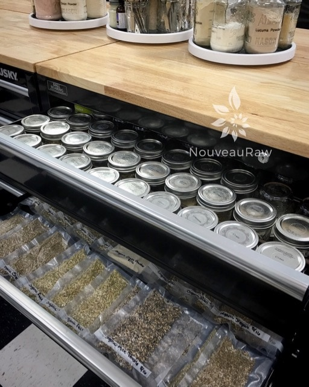
I store all my spices in labeled mason jars and store the overflow in food-saver bags.
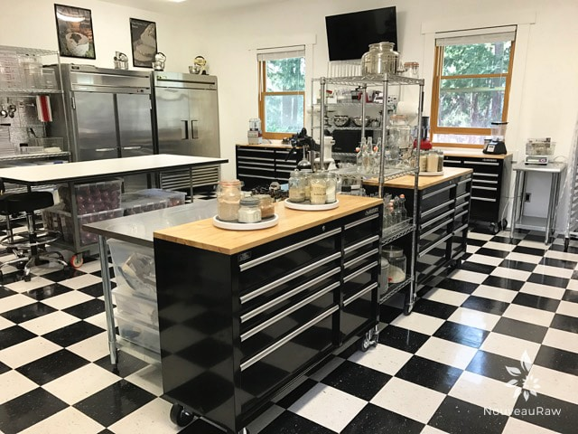
These toolboxes are the ones that contain towels, non-stick dehydrator sheets, gloves,
hair nets and so forth. Across from them, which you can’t see just yet is the washing station.
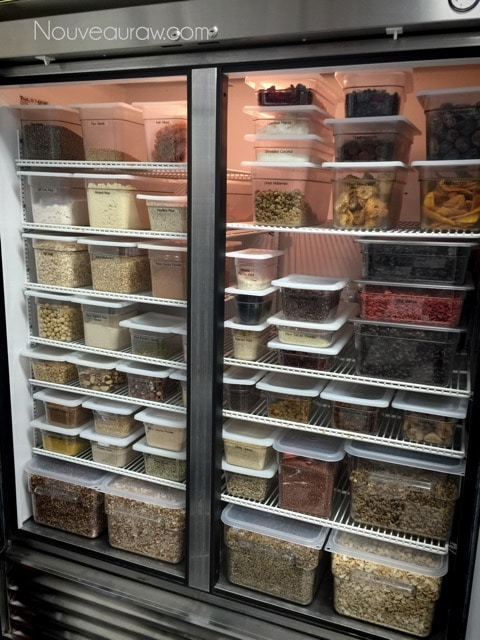
Above is a sneak peak of my what I keep stored in the fridges. I store all my grains,
nuts, seeds, and some dried fruits in there. I only keep the amount of nuts that I plan on
using within a couple of months in fridge, the rest go in the freezer.
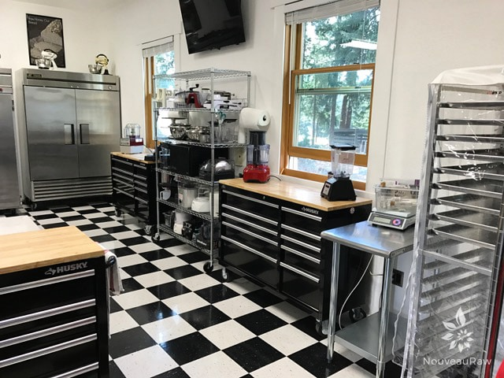
The tall rack in the center of the windows houses all my kitchen gadgets; spiralizers, choppers,
mandolins, ice cream machines, blender jars, and mixing bowls. All appliances are plugged in and
ready to go at a moments notice… because that is how I roll. hehe The tall rack on the right side
of the photo is where what I refer to as my “banana ripening station.” We can ripen about 250 lbs
of bananas for making of our Crispy Monkey Brittle.
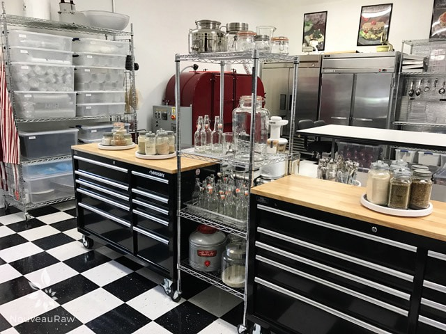
The tall rack that is between the two tool boxes is my kombucha station. I have been running a
continuous brew for about a year now. In the photo it is empty because I am doing a deep
cleaning of the equipment.
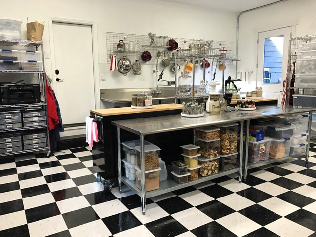
A new angle. As you can see I store some of my ingredients on the shelves under the work
stations. The rack to the left which isn’t in full view is my office station that holds; printers,
mailing material, paper, tape, and many other non-food items but still related to my creations.
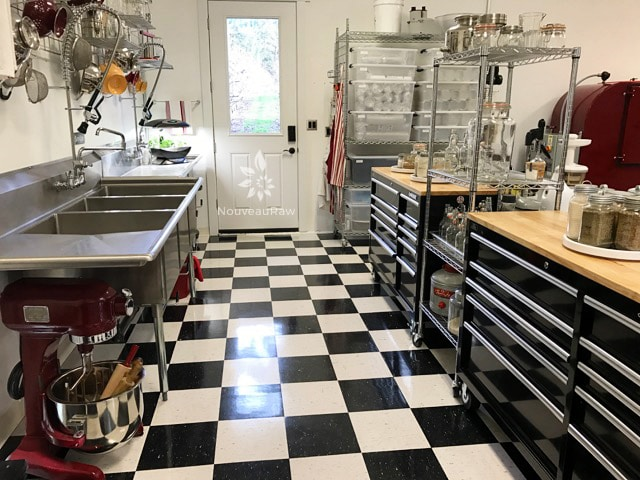
This is what you see once you walk out of the house and into kitchen, and turn left. Two full
sized washing stations, my Areogarden (growing fresh herbs year round) and a door that leads
out to the pear orchard.
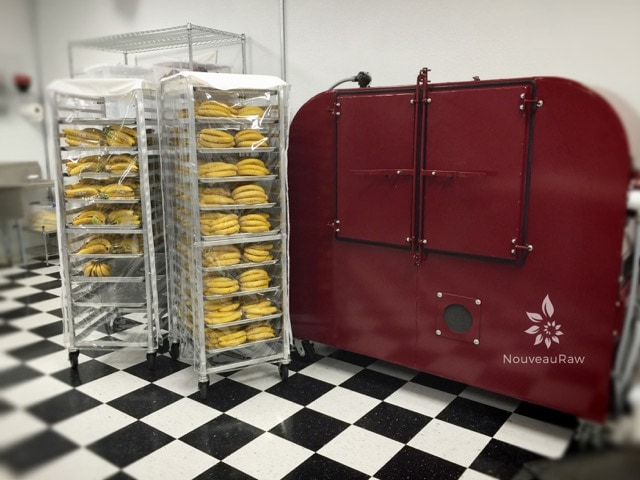
Everyone, meet Big Red. Big Red, meet everyone. :)
This is the commercial dehydrator that was made for us so we can make our Crispy Monkey Brittle, and other things of course. She weighs in at 2,000 lbs and can dry 88 trays at one time.
Trust me, it wasn’t an easy task getting her into our kitchen. First of the shipping truck needed a loading dock, which we didn’t have so we had to have it unloaded at a nearby tortilla chip factory who was kind enough to let us the use of their’s.
We had to borrowed a fork lift to transfer it another truck and then had to s.l.o.w.l.y. drive it a few miles to our property. From there the fork lift was able to get it off the truck and then proceeded to drive it up our 1/4 mile long uphill driveway…. backwards, yep backwards! Oh, and in the rain! lol He had to drive that way so the weight would be over the driving wheels and not slip n slide. It may have been a lot of work, but we handled it with grace and ease. :) Is there really any other way?
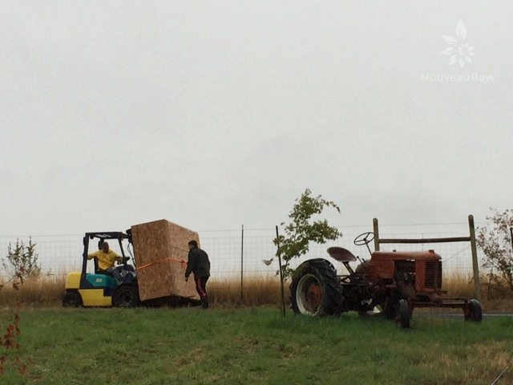
You won’t find any stray almonds or raisins on this floor! Clean as a whistle. I assume they are clean. hehe
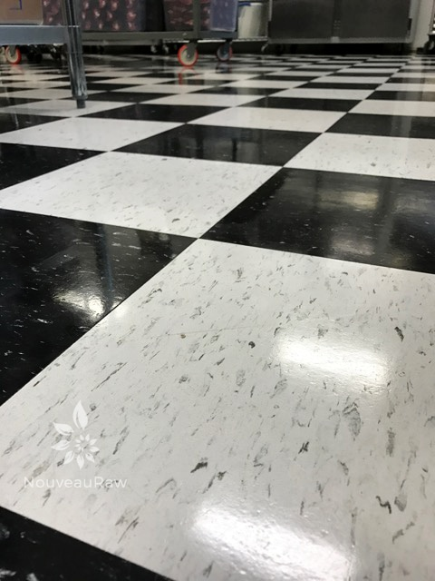
So, that about sums things up. This is where I create all my recipes, dirty tons of dishes, wash lots of dishes, spill lots of things, and have blenders explode on the ceiling. All in a day’s work. :) If you have any further questions about the kitchen, please don’t hesitate to ask. I hope you enjoyed this, Blessings, amie sue
© AmieSue.com